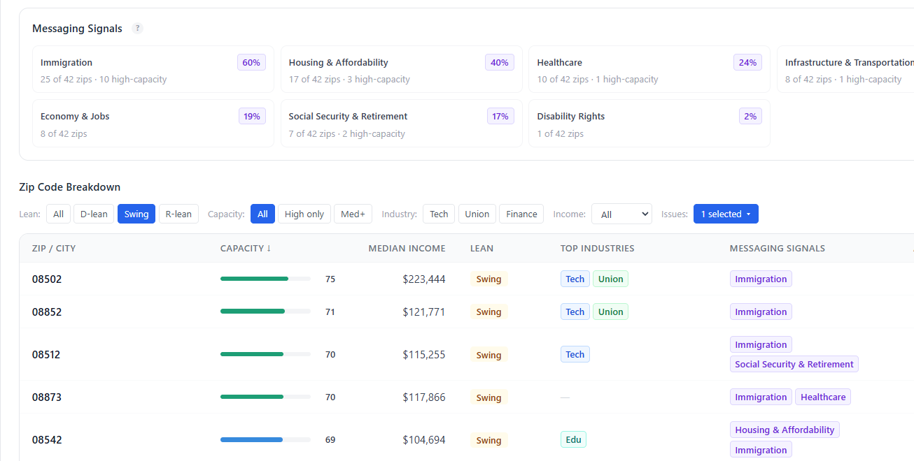
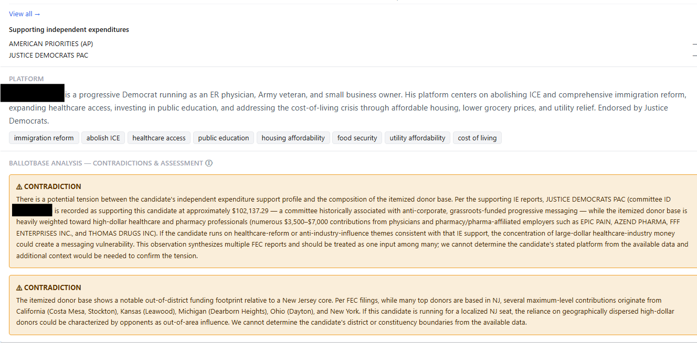
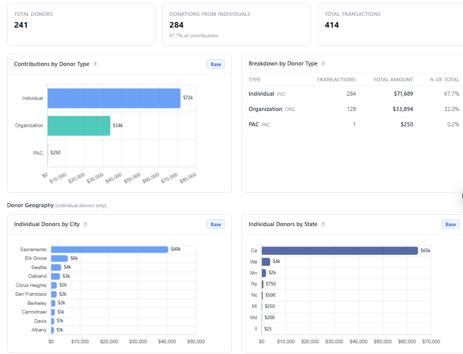
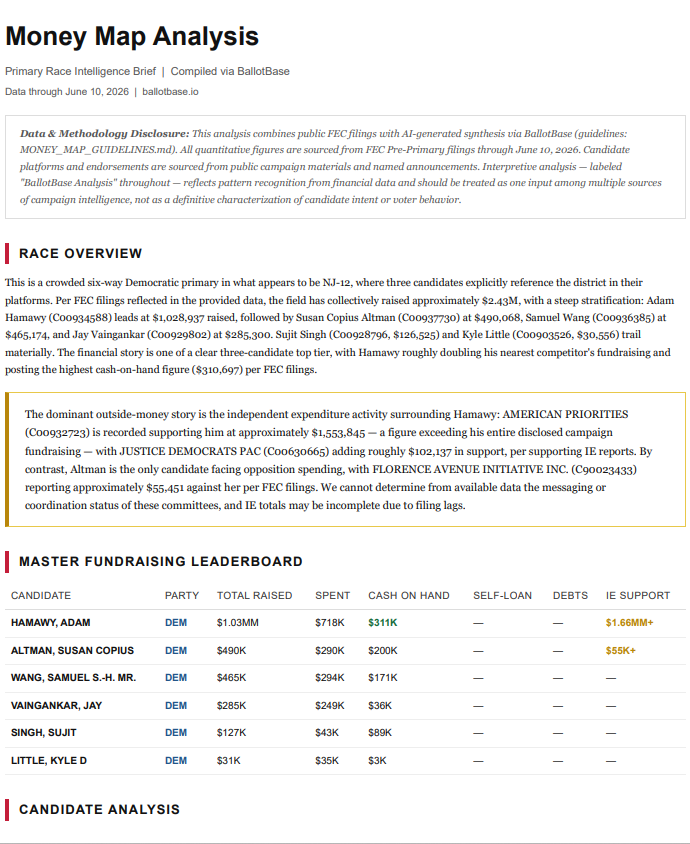

The daily command center for campaigns and the consultants who run them — live money data for federal, state, county, and city races, turned into decisions before your first coffee.
Yesterday's take. Pace against your goal and the filing deadline. Money that moved against you overnight — outside spending, 24-hour reports, late filings across every disclosure layer. A call list of your biggest lapsed donors, with pledges that clear themselves when the gift lands. All of it emailed to you at 6:30am, too.
See who your top contributors are, how much they have left to give, and which donors from prior cycles have gone quiet. BallotBase breaks down your donor file by contribution size, repeat giving behavior, and geographic concentration — so you know exactly where to focus your next ask.
BallotBase categorizes every disbursement by type — advertising, payroll, consulting, fundraising, and more — so you can see at a glance how a campaign is allocating resources. Compare spend patterns across committees to spot over-investment in overhead or under-investment in voter contact.
For federal campaigns, BallotBase shows in-state vs. out-of-state donor breakdowns by congressional district. For California committees, it tracks in-district vs. out-of-district ratios. Donor density normalized per 100k residents helps you find untapped markets where you're underleveraging your support.

BallotBase tracks fundraising performance across every filing period, showing month-over-month and quarter-over-quarter trends. Spot the campaigns building momentum heading into election season, and identify the ones burning through cash without a sustainable donor base.
Pull analytics on any committee in the same race and compare side by side. See where opponents are fundraising, how efficiently they're spending, and which donors they share with you. Track IE committee activity targeting your race before it hits the airwaves.

BallotBase includes a built-in California filing tracker that understands FPPC rules. Log contributions and expenditures, and the system automatically determines which form applies, flags missing required fields, and alerts you when a transaction triggers a 24-hour late filing requirement. Export is gated until your filing is clean.
BallotBase pulls directly from government disclosure systems and applies the filtering and deduplication logic that makes the numbers actually usable.
BallotBase fits into your existing workflow — from understanding your donor base to briefing your clients — without the manual work.
See who your top contributors are, how much they have left to give, and which donors from prior cycles have gone quiet. BallotBase breaks down your donor file by contribution size, repeat giving behavior, and geographic concentration — so you know exactly where to focus your next ask. Layer in the full competitive field to see how your fundraising stacks up against every other candidate in the race.

Donor IntelligenceClick image to zoom
Click image to zoom
Know where to target your fundraising before you spend a dollar. The Prospect Map scores every zip code in your district by donor capacity, partisan lean, and historical FEC giving patterns. Issue signals derived from Census data show you what matters most to residents in each geography — so you can match your message to the market and build a targeted donor list directly on the platform.
MoneyMap traces the full donor network for any candidate in your race — who gave, where they're from, and who employs them. BallotBase then runs AI-powered contradiction analysis, comparing each candidate's stated platform against their observed financial patterns. When a candidate's donors tell a different story than their messaging, it gets flagged — automatically, sourced from public data, and ready to use.
Click image to zoom

Client-Ready BriefingsClick image to zoom
Everything BallotBase surfaces — donor networks, contradiction flags, geographic analysis, IE activity — compiles into a formatted PDF memo ready to send. Stat cards, donor tables, race overview, and analysis labeled clearly as AI-generated synthesis. Sourced from public FEC filings. No formatting required on your end.
BallotBase automatically detects committee type and applies the right data source and analytics.
House, Senate, presidential campaigns, PACs, and Super PACs. Any committee with an FEC ID.
Learn more →State Assembly, State Senate, statewide offices, local races, and IE committees.
Learn more →Campaign finance for city council, mayor, supervisor, and school board races across 221 California cities and counties — the races nobody else covers. Synced daily, including 24-hour late-money filings.
CA bills back to 2013, federal bills, 850K+ lobbying disclosure records, and city-level lobbyist filings — joined to the money.
Learn more →State-level disclosure systems for Texas and New York are in development.
Enter any FEC committee ID or Cal-Access filer ID and get a full analytics dashboard in seconds.
No credit card required. We'll reach out personally within 24 hours.